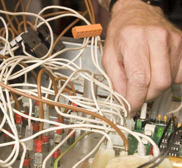

 Utbildningens längd: Cirka 48 veckor. Antal platser: Begränsat antal. Godkända betyg i Eng A, Ma A, Sv A alternativt Eng 5, Ma 1, Sv 1 eller Sv som andraspråk 1. Observera: Sökanden från annan kommun än Varberg skall ansöka via vuxenutbildningen i den egna hemkommunen. Denna elutbildning ger dig de grundläggande kunskaper som behövs för att arbeta med elinstallation. Du får också tekniska och teoretiska kunskaper inom området elteknik. Studierna bedrivs individuellt. Efter att ha läst ett gemensamt grundpaket inom elteknik väljer du en av yrkesutgångarna; installationselektriker, larmtekniker, industrielektriker. Det går bra att läsa vissa delar på distans, om du så önskar. Utbildningen följer Elbranschens Centrala Yrkesnämnds (ECY) kursplan för elektriker. Du får de kunskaper som krävs för att söka begränsad elbehörighet. Utbildningen är huvudsakligen förlagd till utbildningslokalen. Omkring fyra veckors arbetsplatsförlagd praktik ingår. Lärlingstiden efter utbildningen är ungefär ett år. Förordningen om vuxenutbildning (2011:1108) anger att gymnasiearbetet är en del av den kommunala vuxenutbildningen på gymnasial nivå. På yrkesprogrammen ska gymnasiearbetet visa att eleven är förberedd för det yrkesområde som gäller för den valda yrkesutgången: ”Med gymnasiearbete avses en uppgift om 100 gymnasiepoäng som eleverna genomför inom ramen för examensmålen för det program inom gymnasieskolan som utbildningen i huvudsak motsvarar (2011:1108 2 kap 3 § ).”